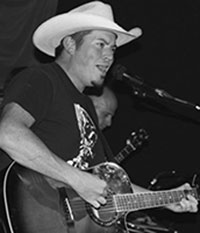
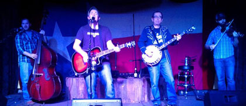

This History of Cactus Jack
Bluegrass from the Hood! Hood county that is. Cactus Jack is a fairly new band with a different kind of take on bluegrass/country music. They have been playing all over Fort Worth and have even been featured on 95.9 the ranch. With their inspired beer drinking songs, comedy songs, the occasional love song and a ton of covers that any unsuspecting person would not expect, you will be sure to crack a smile and clap your hands.
The History of The Band Of Outlaws
The Band of Outlaws are his revolving band line up, he has assembled some of Fort Worths' finest players to grace the stage with him.